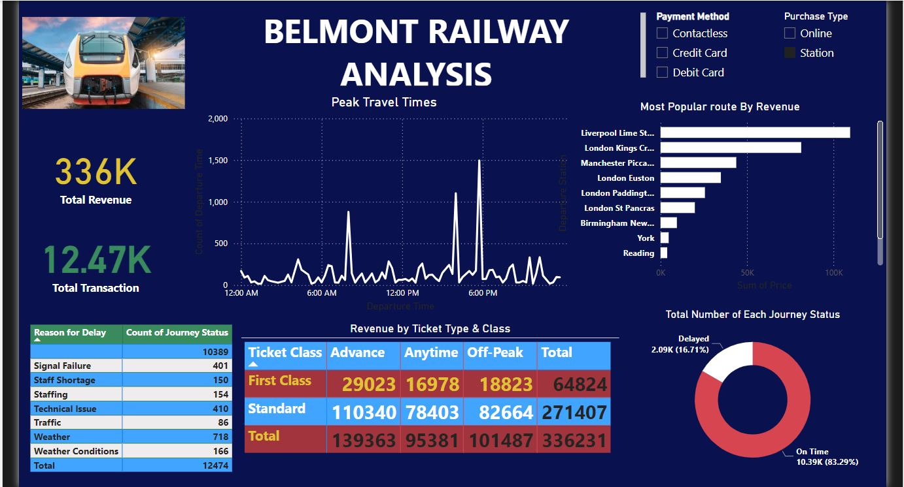

BELMONT RAILWAY ANALYSIS
BUSINESS PROBLEM
The Belmont Railway Company is seeking to optimize its operations by understanding key performance metrics related to revenue, customer journey statuses, and peak travel times. The company aims to improve its service delivery, particularly in areas affecting customer satisfaction, such as delays, payment methods, and ticket sales across different travel classes. The core business problem centers on:
- Identifying revenue-generating routes and optimizing them for better service.
- Understanding the causes of journey delays and minimizing them.
- Analyzing peak travel times to enhance resource allocation.
- Evaluating the effectiveness of different payment and purchase methods to improve customer experience and transaction efficiency.
INSIGHTS AND FINDINGS
Based on the Analysis, the following key insights are derived:- Total Revenue: The total revenue generated is 336K, derived from 12.47K transactions.
- Revenue by Ticket Type & Class: Standard Class tickets contribute the majority of the revenue (271.4K), with Advance tickets leading the sales (110.34K) in this class. First Class tickets contribute significantly less, with total revenue of 64.82K.
- Most Popular Routes: The route from Liverpool Lime Street to other destinations is the most popular by revenue, followed closely by routes from London Kings Cross and Manchester Piccadilly.
- Peak Travel Times: There are clear spikes in travel around 6:00 AM and 6:00 PM, indicating high demand during early morning and evening hours. This information can be used to optimize staffing, train availability, and customer service during these periods.
- Journey Status: On-Time vs Delayed: 83.29% of journeys were on time, while 16.71% (2.09K) were delayed. The causes of delays are predominantly due to Signal Failures (10.39K counts) and Weather-related Issues.
- Payment and Purchase Methods: Customers predominantly use Contactless Payment Methods at stations. This insight can inform the development of faster, more efficient contactless payment systems, and perhaps incentives for using online purchase methods to reduce congestion at stations.
Methods used
The following procedures were undertaken to generate this comprehensive analysis:- Data Collection: Data was sourced from Belmont Railway's transactional and operational databases, focusing on key metrics such as revenue, ticket sales, payment methods, and journey statuses.
- Data Cleaning: The data was cleaned to remove any anomalies or inconsistencies, ensuring accuracy in reporting. This included handling missing values and standardizing data formats.
- Data Transformation: The data was transformed into meaningful categories such as Ticket Type, Class, Reason for Delay, and Payment Methods to enable insightful analysis.
- Data Visualization: Advanced visualization techniques were employed using tools like Power BI to create a dashboard that is not only visually appealing but also easy to interpret. Charts such as bar graphs, pie charts, and line graphs were used to depict revenue distribution, delay reasons, and peak travel times effectively.
RECOMMENDATIONS
Based on the insights derived from the dashboard, the following recommendations are made:- Invest in Infrastructure: Address the frequent signal failures and weather-related issues that are the leading causes of journey delays.
- Optimize Staffing and Resources: Adjust staffing levels and train availability during peak times to improve service delivery.
- Focus on High-Revenue Routes: Prioritize service quality and marketing efforts on the most profitable routes, particularly those originating from Liverpool Lime Street and London Kings Cross.
- Enhance Payment Systems: Improve contactless payment options and consider promoting online ticket purchases to reduce station congestion.